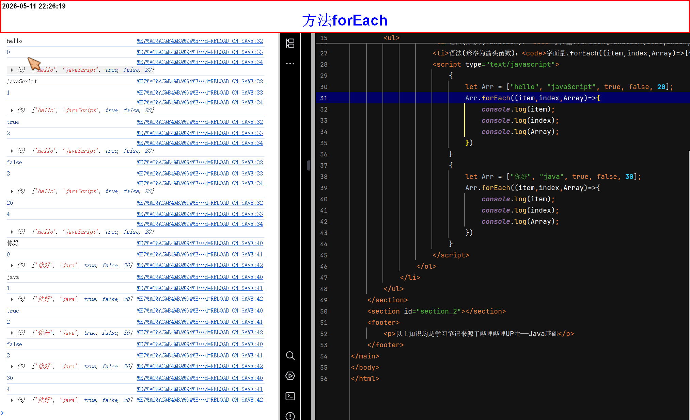
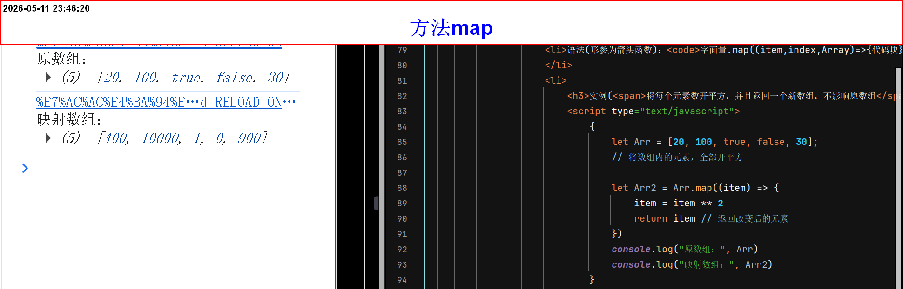
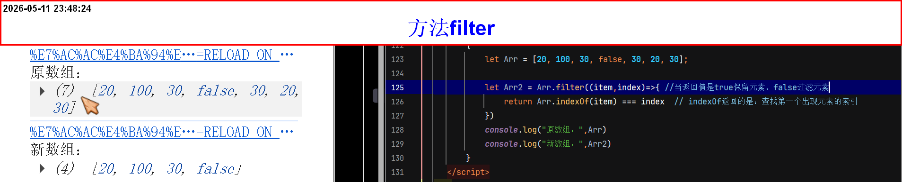
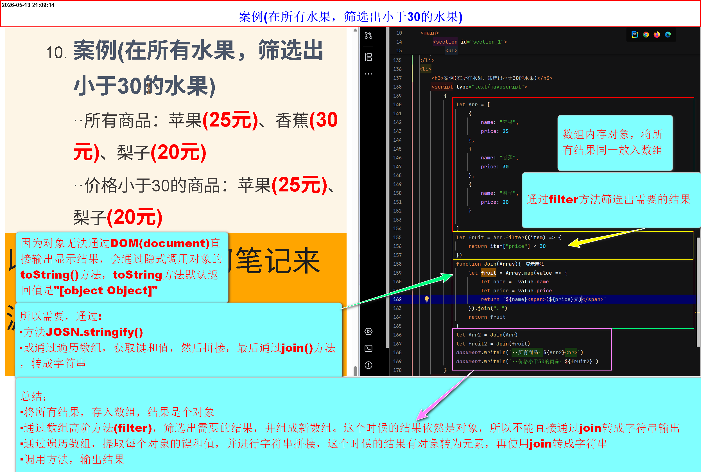
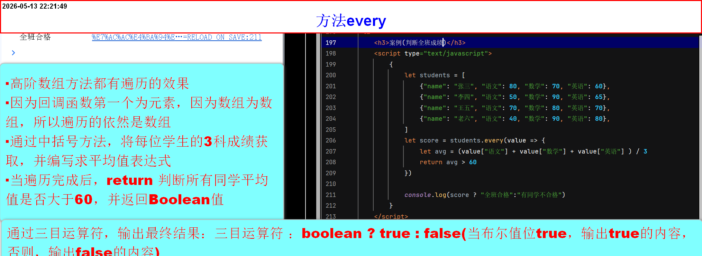
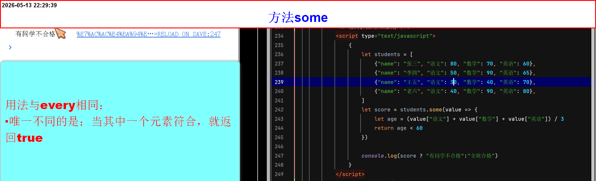
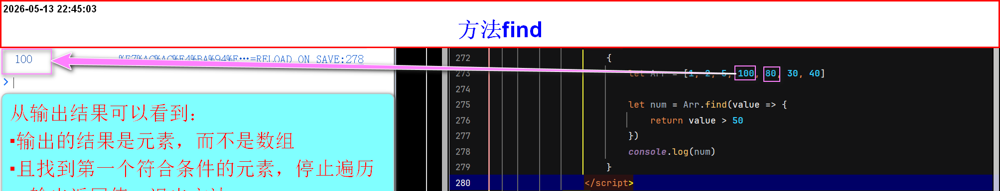
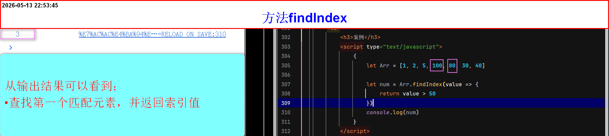
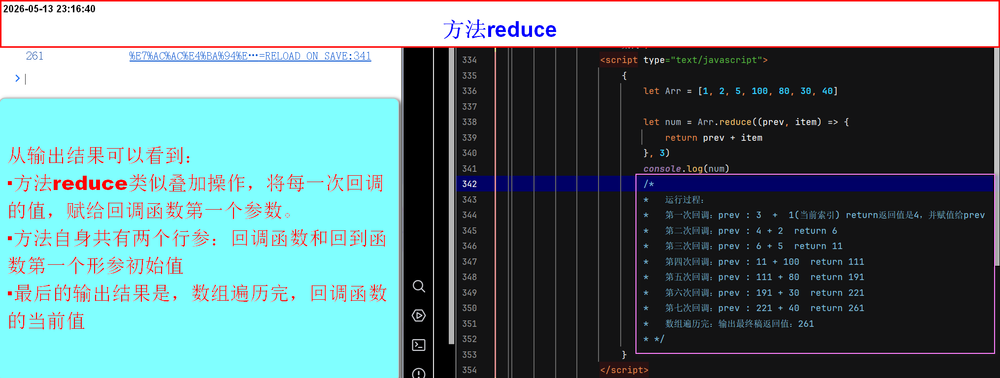

数组常用方法拓展
-
方法
forEach- 该方法用于遍历数组
- 遍历次数由数组长度决定，且每一次遍历，代码块都会从头到尾执行一次
- 所以需要注意：在 forEach 的回调中修改数组如使用（数组常用方法_原数组会受影响的方法，可能导致某些索引被跳过或遍历次数与预期不符
- 它的形参是一个回调函数
- 回调函数的形参固定，第一个返回当前数组元素，第二个返回当前数组索引，第三个返回原数组
- 回调函数：形参命名自定义，实参编码者无权干涉(方法forEach自动回调给形参)
forEach可以理解为特殊的回调函数，它的返回值始终是undefined，尽管使用return也没用forEach的回调函数里的return相当于continue(跳过本次回调的后续代码)，无法中断整个循环(若要中断需要用some、every、for循环)- 语法(形参为function)：
字面量.forEach(function(item,index,Array){代码块})
item、index、Array(3个形参命名自定义)，但是返回值固定forEach回调分别为(元素、索引、原数组) - 语法(形参为箭头函数)：
字面量.forEach((item,index,Array)=>{代码块})
item、index、Array(3个形参命名自定义)，但是返回值固定forEach回调分别为(元素、索引、原数组) -
实例

-
方法
map(map)- 该方法用于将数组中的每个元素“映射”成一个新值，并返回由这些新值组成的新数组（原数组长度不变，每个位置对应回调函数的一次返回值）。
- 核心： 不改变原数组，通过回调对每个元素进行“转换”，返回一个等长的新数组。相比手写 for 循环，代码更简洁、语义更清晰
- 同样，map方法的形参也是回调函数
- 形参固定3个，分别是：当前元素，当前索引，调用
map方法原数组，形参命名自定义 - 实参，编码者同样无权干涉，由
map方法回调决定 - map方法有返回值，返回值是转换数据，并生成新数组(必须要return关键字)
- map方法内的回调函数，使用关键字
return退出本次回调函数(退出这一次回调函数(结束当前元素处理，整个map循环不会停止，直到所有元素都回调一次))，并返回一个值 - 语法(形参为function)：
字面量.map(function(item,index,Array){代码块})
item、index、Array(3个形参命名自定义)，但是返回值固定forEach回调分别为(元素、索引、原数组) - 语法(形参为箭头函数)：
字面量.map((item,index,Array)=>{代码块})
item、index、Array(3个形参命名自定义)，但是返回值固定forEach回调分别为(元素、索引、原数组) -
实例(将每个元素数开平方，并且返回一个新数组，不影响原数组)

-
方法
filter- 该方法主要用于过滤
- 同样形参是回调函数
- 形参固定3个分别是：当前元素，当前索引，调用
filter的原数组，形参命名自定义 - 实参操作者无权干涉，由方法
filter的回调(返回值)决定 - 回调需要布尔值：
ture保留元素，false过滤(消除)元素 - 返回值是布尔值，必须要
return关键字 - return：退出这一次回调函数(结束当前元素处理，整个filter循环不会停止，直到所以元素都回调一次)，并返回一个值
- 方法返回值是一个新数组，也就是不会对原数组产生影响，所以需要声明变量接收它
-
案例(数组去重)

-
案例(在所有水果，筛选出小于30的水果)

-
方法
every- 该方法主要用于判断
- 形参同样是回调函数
- 语法(function)：
字面量.every(function(value,index,Array){代码块}) - 语法(箭头函数)：
字面量.every((value,index,Array)=>{代码块}) - value：当前元素 、 index：当前索引 、Array：调用方法的原数组
- 返回值是：Boolean类型(true、false)
-
只有当所有元素都符合条件的时候，返回值为
true，否则，返回值是false - 必须要使用关键字
return才能返回结果 - 因为它不会改变原数组：所以需要声明变量来，接受返回值
-
案例(判断全班成绩)

-
方法
some- 该方法主要用于判断
- 形参同样是回调函数
- 语法(function)：
字面量.some(function(value,index,Array){代码块}) - 语法(箭头函数)：
字面量.some((value,index,Array)=>{代码块}) - value：当前元素 、 index：当前索引 、Array：调用方法的原数组
- 返回值是：Boolean类型(true、false)
-
当其中一个元素符合条件的时候，返回值为
true，否则，返回值是false - 必须要使用关键字
return才能返回结果 - 因为它不会改变原数组：所以需要声明变量来，接受返回值
-
案例(判断全班成绩)

-
方法
find- 该方法用于：查找
- 查找第一个匹配条件的元素(短路行为)，并当作返回值输出
- 与
filter(没有短路行为)不一样的是，它是返回元素，且只返回第一个匹配 - 形参同样是：回调函数
- 语法(function)：
字面量.find(function(value,index,Array){代码块}) - 语法(箭头函数)：
字面量.find((value,index,Array)=>{代码块}) - value：当前元素 、 index：当前索引 、Array：调用方法的原数组
- 返回值是：第一个匹配的元素，若没有找到，返回值是
undefined - 必须用
return关键字 - 该方法不会对原数组产生影响，所以需要声明变量接受返回值
-
案例

-
方法
findIndex- 该方法用于：查找
- 查找第一个匹配条件的元素(短路行为)，并返回元素的索引
- 与
indexOf一样的是：都是返回第一个匹配元素的索引，没有找到则返回值是：-1 - 但是：findIndex可以写复杂条件，而indexOf只能做严格相等运算
- 形参同样是：回调函数
- 语法(function)：
字面量.findIndex(function(value,index,Array){代码块}) - 语法(箭头函数)：
字面量.findIndex((value,index,Array)=>{代码块}) - value：当前元素 、 index：当前索引 、Array：调用方法的原数组
- 返回值是：第一个匹配的元素的索引，若没有找到，返回值是
-1 - 必须用
return关键字 - 该方法不会对原数组产生影响，所以需要声明变量接受返回值
-
案例

-
方法
reduce- 该方法用于：叠加
- 形参同样是：回调函数
- 语法(function)：
字面量.reduce(function(prev,item,index,Array){代码块},初始值) - 语法(箭头函数)：
字面量.reduce((prev,item)=>{代码块},初始值) - prev：上一次回调的结果、 item：当前元素 、index：当前元素索引、Array：调用方法原数组、初始值：prev初始值
- 返回值是每次回调计算的最终结果
- 必须用
return关键字 - 该方法不会对原数组产生影响，所以需要声明变量接受返回值
-
案例
